Dirección
Carolina Albanece Prat
“Nos emociona ver reflejada nuestra idea gestacional: la relación entre la adultez y lo lúdico, a través de la figura de un niño.”
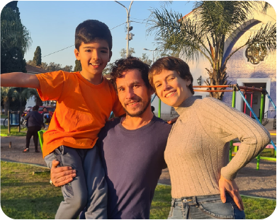Elenco:
Victoria Ceron
(Carla)
Claudio Corbalán
(Felipe)
Fausto Ochoa Capuano
(Nacho)
La idea que nos movilizó como equipo fue la de reflejar la relación entre el mundo adulto y lo lúdico. Creo que en "Aprendiendo a jugar" la figura del hijo viene a marcar el fuerte contraste entre los juegos de adultos y los de niños, como si en estos últimos hubiera una esencia intacta del juego en su más pura expresión. El adulto, consumido en la vorágine, se olvida y se desconecta de su capacidad de jugar. La estructura del corto fue pensada grupalmente, y luego nos dividimos en las distintas áreas para el resto de la producción. Larguísimas jornadas de trabajo, conocer a los actores, comunicación constante con todo el equipo, muchos talentos puestos en juego... Queremos que quienes vean "Aprendiendo a jugar" recuerden cuál es su juego favorito, y se queden con ganas de hacerse el rato para jugarlo. Les deseamos que encuentren con quién..
Asistente de Dirección
Ayelén Assell
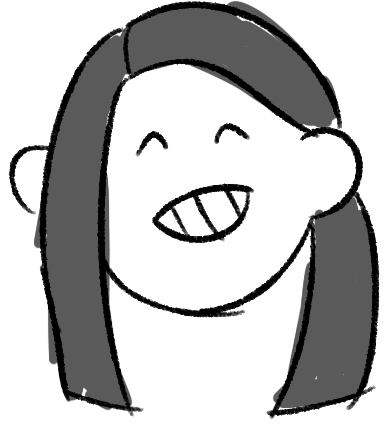“Encontré un equipo que se unió con pasión y propósito, y juntos descubrimos que no hay meta que no podamos alcanzar.”
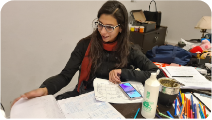
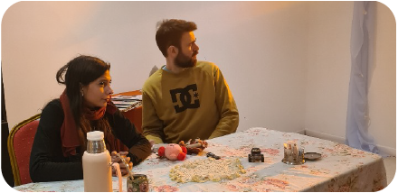
Como asistente de dirección, mi rol fue fundamental para garantizar que cada etapa de la producción se desarrollara de manera ordenada y eficiente. Me encargué de coordinar los tiempos y las secuencias del rodaje, asegurándome de que cada área tuviera lo necesario para llevar a cabo su trabajo sin contratiempos. Mi tarea también fue mantener la comunicación constante entre los equipos técnicos, como cámaras, sonido y arte, para que todos estuvieran alineados con la visión de la directora. Además, tuve que gestionar el bienestar del equipo, resolver imprevistos rápidamente y asegurarme de que la locación estuviera lista para cada toma, siempre con el objetivo de optimizar los tiempos y lograr la mejor calidad en cada escena. Esta experiencia me permitió aplicar mis conocimientos en comunicación, organización y resolución de problemas, habilidades esenciales para un técnico en Comunicación Multimedial, y trabajar en equipo para crear una atmósfera productiva y creativa.
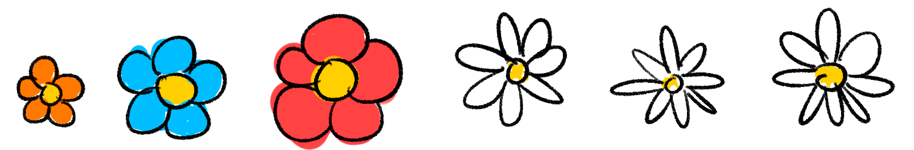Producción
Kiara Zoe Guadamarra
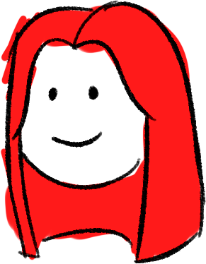“Este corto me enseñó que la magia del juego nunca se pierde, sólo espera a ser redescubierta.”
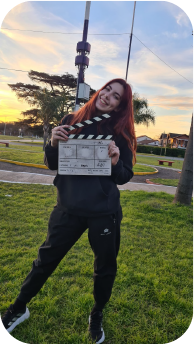
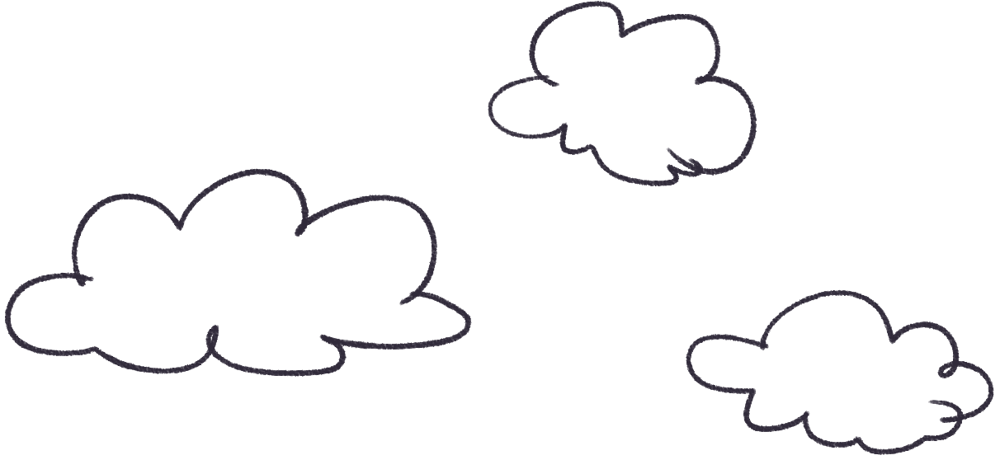
Como productora en este cortometraje, me encargué de coordinar varios aspectos esenciales del proyecto. Comencé con la difusión del proyecto, en busca de 3 actores. Estuve presente en el casting, colaborando en la evaluación y elección del elenco junto al equipo de dirección. Una vez elegidos los actores antes de las grabaciones, gestioné un encuentro para un ensayo con los mismos. También coordiné las locaciones del rodaje, asegurando los permisos y la disponibilidad de los espacios necesarios para el desarrollo de la historia. Además, me ocupé del catering para el equipo, coordinando las comidas y bebidas para cada jornada de rodaje. Por último, estuve presente en los dos días de rodaje, ayudando en lo que fuera necesario para que todo saliera según lo planeado. Cada una de estas tareas contribuyó a un ambiente de trabajo fluido, enfocado en la creación del proyecto final.
Guión
Elian Jordedo
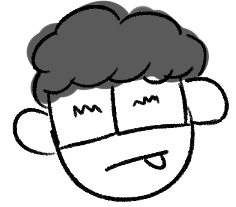“No puedo imaginar haber realizado este proyecto con otro grupo de personas que no fuera éste. Sólo tengo respeto y agradecimiento por todo el esfuerzo y dedicación puestos por todos.”
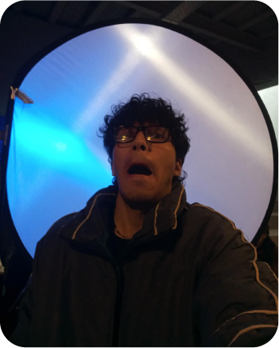Como guionista, tuve el trabajo de armar la columna vertebral de todo el corto. Fueron muchas horas, días y semanas que tuve que dedicarle, pero viendo el resultado final, creo que el esfuerzo valió más que la pena. Durante la creación del guión, tomé como inspiración varios aspectos de mi vida y experiencias de gente cercana a mí para darle una cara más realista a la relación de Felipe y Nacho. Mostrando a un padre con muchísimas faltas, pero con la determinación para intentar corregirlas, aún después de fallar muchas veces. Fue enriquecedor ver cómo tantos integrantes de la producción (tales como la directora, los actores y demás miembros) fueron interpretando lo que escribí de tantas formas distintas, añadiendo diálogos y cambiando varios aspectos desde el inicio hasta el final de la grabación. Fue una muy buena experiencia.
Dirección de Arte
Lenna Ripa
"A las nuevas generaciones: usen la creatividad para sanar, conectar y construir narrativas de esperanza en cada proyecto."
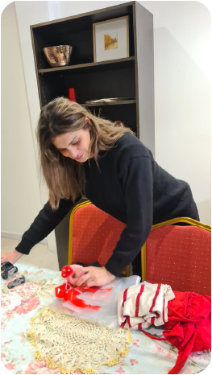
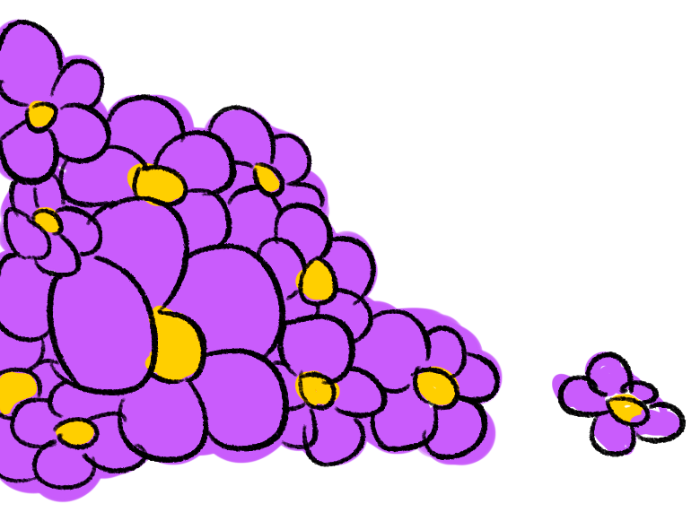
Como directora de arte de Aprendiendo a jugar, mi enfoque fue transmitir la tensión y evolución emocional de cada personaje. La paleta de colores comienza en tonos fríos y oscuros por parte de Felipe, reflejando la dureza y desconexión con esté, mientras que el vestuario de la madre, Carla, y el niño, Nachito; incorpora tonos más suaves que sugieren esperanza y vulnerabilidad. Cada textura y detalle visual—desde los materiales rígidos en el padre hasta las telas más cálidas en la madre—busca intensificar la relación de poder y la lucha interna de cada personaje, marcando su lugar en el tiempo y el espacio. Al final, el entorno se ilumina y los colores se vuelven cálidos, representando un resquicio de paz y redescubrimiento del amor familiar.
Dirección de Fotografía
Agustina Lamberti
“Estoy orgullosa del esfuerzo de cada uno de mis compañeros en el desempeño de su rol, que se reflejó en cómo quedó el proyecto tal como lo imaginaba. Agradezco a mi hermoso equipo por el maravilloso trabajo y por esas noches en las que nos quedamos resolviendo cada detalle del proyecto.”
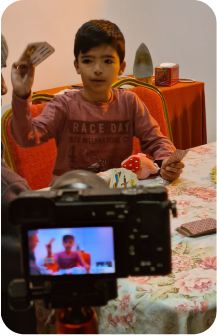
Primer Acto: Utilizamos luces frías para Felipe, lo que simboliza la falta de comunicación y la desconexión emocional con su familia, mientras se deja llevar por la aplicación de casino online. En contraste, Nacho tiene luces cálidas, representando la inocencia de la niñez, y Carla también está iluminada con luz cálida, lo que refleja la dualidad entre protagonista y antagonista, y su deseo de paz en el hogar. Segundo Acto: En este acto, cambiamos las luces para reflejar las emociones de los personajes. Felipe comienza a tener destellos de luz cálida, lo que demuestra su esfuerzo por formar una relación con su hijo. Nacho pasa a luz fría, lo que expresa la desilusión por la actitud de Felipe. Carla mantiene la luz cálida con Nacho, pero cuando está con Felipe, la luz se vuelve fría, reflejando su enojo y decepción hacia él. Tercer Acto: Al final, cambiamos las luces de frías a cálidas en Felipe y Nacho, lo que simboliza la restauración de la unión entre padre e hijo. Este cambio de iluminación refleja la reconciliación y la recuperación del vínculo familiar, mostrando cómo lograrán superar sus diferencias y restablecer su conexión emocional.
Cámara
Juan Ignacio Llado
"Recuerden: ¡Nunca es tarde para aprender a jugar!”
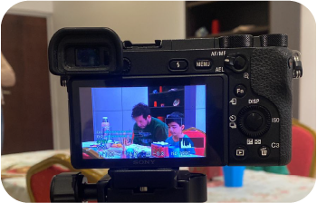
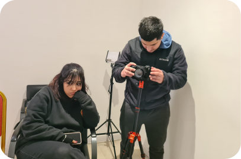
Primero que nada quería agradecerles a mis compañeros de equipo de darme la confianza en un rol que nunca antes me había desempeñado, esto fue muy importante en el producto final de cámara. Un rol hermoso, poder crear imágenes que van a quedar para la eternidad en este corto. Fue todo un reto que lleve acabo con el mayor esfuerzo. Espero que les haya gustado y nuevamente agradecer a todos mis compañeros por este proyecto.
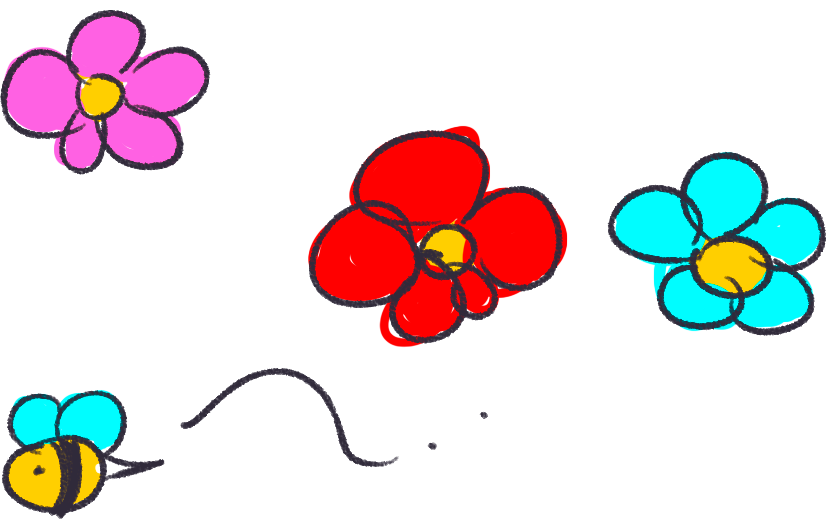Dirección de Sonido
Edith Quiñones

“Los recursos de sonido son esenciales para comunicar emociones y establecer un clima, un ambiente enriquecedor en la narrativa de la obra audiovisual, generando en el espectador una conexión con los personajes y logrando una percepción más real e inolvidable.”
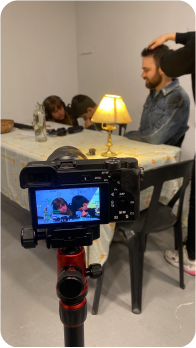
Desde el inicio del cortometraje se hizo un análisis de guión para identificar las necesidades sonoras: diálogos, efectos de sonido y música. Todos en su conjunto son fundamentales para generar una unidad en la narración del cortometraje. En primera instancia se realiza el chequeo de todo el equipo que incluye micrófonos de solapa, de cañón, grabadoras, baterías, etc. A la vez, chequear el correcto funcionamiento de cada uno de los aparatos, mantener un monitoreo constante en el rodaje y realizar ajustes si son necesarios. En la postproducción se sincronizan los sonidos con la imagen, se eliminan ruidos no deseados para que el audio esté limpio mejorando la calidad de las grabaciones. En "Aprendiendo a jugar" fue super importante el diálogo para entender la historia de los personajes y cómo van evolucionando a medida que avanza la historia. También se usaron recursos de sonido como foleys, efectos especiales y temas musicales para destacar acciones, creando una atmósfera emocional que represente a los personajes.